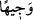

“Nihâyet Allah onu, dedikleri şeyden temize çıkardı.”
“nün asıl anlamı, beraberliği hoş görülmeyen şeyden kurtulup uzaklaşmaktır.
Yâni, Allah Mûsâ (a.s.)’ı hakkında dedikodu yaptıkları şeylerden, onların söyledikleri
sözün muhtevâsı ve ifâde ettiği mânâ olan onu ayıpladıkları husustan temize çıkardı.
Çünkü berâet, sözden değil ayıptan olur. Burada olan ise onların söyledikleri sözden
kurtulmaktır.
“O, Allah yanında şerefli idi.”
el-Vasît’ta der ki: “Kişi mevki, makam, îtibar, kadir ve kıymet sâhibi olunca ona “ denilir. Yâni Mûsâ (a.s.) Allah yanında mevki, makam ve yakınlık sahibi idi. Öyleyse
nasıl olur da bir ayıp ve noksanlıkla tavsif edilebilir?
İbn Abbas (r.a.) şöyle demiştir: “ yâni değerli, sevilen bir kimse idi. Allah’tan
ne isterse mutlaka ona verirdi.”
Burada işâret vardır ki Mûsâ (a.s.)’ın şerefli/değerli olduğuna ezelde hükmedilmişti.
Onun için İsrâiloğulları’nın onu ayıplamasıyla şerefi ve îtibarı gitmeyecektir. Nitekim
şâir şöyle demiştir:
Efendim! Ben senin nezdinde bir tarafa atılmışsam
Senden başkasının nezdinde hiç sayılırım.
Mesnevî’de şöyle denilmiştir:
Deniz, köpeğin ağzıyla pislenir mi hiç?
Güneş üflemekle söner mi hiç?
Bostân’da ise şöyle denilmiştir:
Güvenilir adam leğene, kötü niyetli olan ise karıncaya benzer.
Karınca ne kadar çabalasa da leğene zarar veremez.
Mûsâ (a.s.)’a yapılan eziyetin sebebinin ne olduğu konusunda ihtilaf edilmiştir.
Bazıları şöyle demiştir: Kârun, zinâkar bir kadına İsrailoğulları’nın ileri gelenlerinin
karşısında Mûsâ’dan zinâ yoluyla hâmile olduğunu söyleyemesine karşılık yüklü
miktarda mal verdi. Zinâkâr kadının kendisiyle Kârun arasında yapılan rüşvet
anlaşmasını ikrar etmesiyle Allah Mûsâ (a.s.)’ın böyle bir kötülükten nezih olduğunu
ortaya çıkardı. Kasas sûresinde açıklandığı üzere Allah Teâlâ Kârun’u yere batırdı.
Kelîmullah için bir kuyu kazdı;
Kendi kuyuya düştü, durumu perişan oldu.
Kaza gelince bu dünyâ dar gelir.
Kazâ yüzünden helva ağızda derde dönüşür.